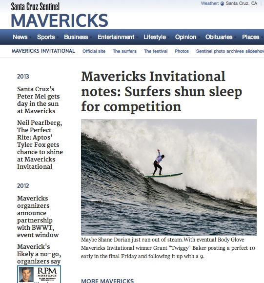

This is the fifth in a series of five Behind the DFMie reports on January’s DFMie winners.
January’s DFMie winners included a repeat winner for event coverage and a strong example of watchdog reporting on a state university.
Sarah Kuta of the Daily Camera in Boulder won the DFMie for the non-metro newsrooms in Colorado and Utah for reporting on sexual harassment in the philosophy department of the University of Colorado.
For the second straight year, the Santa Cruz Sentinel staff won a DFMie in the Northern California cluster for its multi-platform coverage of the Mavericks Invitational big wave surfing contest.
Sarah Kuta’s coverage of harassment

Sarah Kuta, linked from Twitter avatar
The nomination, lightly edited, explains how Kuta jumped on the sexual harassment story:
On Jan. 31, just days after announcing it was in compliance with Title IX legal requirements, the University of Colorado made a shocking revelation, releasing an independent report that found pervasive sexual harassment and bullying throughout the Boulder campus’ philosophy department.
Our higher education reporter, Sarah Kuta, immediately digested the report, and began reaching out to every member of the department, as much of the report was written in generalities with no specific names or incidents revealed.
Sarah was able to quickly report and write a thorough mainbar for the web, letting our readers know about the allegations and what the university plans to do about it, and she delved into the broader issues at play involving CU’s Office of Discrimination and Harassment — something she already was well-versed with because of a prior scandal in the sociology department.
She also produced a sidebar on the department’s stunned reaction to the decision by the university to make the report public, and was able to write a second sidebar based on an interview with one of the report’s investigators.
Sarah is relatively new to the higher-ed beat here at the Camera, but she has proven herself to be a meticulous and aggressive journalist, and her reporting of the sexual harassment allegations within CU’s philosophy department is an outstanding example of her work.
Judges’ comments on her work:
The reporter, Sarah Kuta, did an excellent job breaking down the report and reactions to it, providing boxes with key highlights for readers, and including a variety of perspectives in her stories. Each time a document was mentioned, a link was handily provided or the story indicated where it could easily be read. I also found myself intrigued by the “related stories” headlines, and just kept reading.
Another judge:
In what is supposed to be the enlightened environment of a college campus — in particular CU Boulder — this no doubt came as quite the thunderbolt. Strong reporting and good reaction pieces, allowing all sides to have their say. Reporting shows someone who is clearly engaged in the campus as well as the school faculty. I also like the move to contact an investigator who talked about how common this problem can be, even on college campuses.
Kuta reflected on her reporting:
This story really drove home that old J-school lesson about persistence. Throughout my reporting, I called, emailed, left voice mails, stopped by the department, etc., and repeated this process until I was able to form relationships with some philosophy faculty members, who were hesitant about talking to the media. But it’s our job as reporters to find and tell all sides of any story, not just one, so I felt it was important to share faculty points of view as much as possible.
Santa Cruz Sentinel surfing coverage wins again

The Santa Cruz Sentinel used the Bay Area News Group’s MoJo Lab van as a mobile newsroom to provide coverage from the beach. DFM Regional Engagement Editor Martin Reynolds had taken MoJo to Santa Cruz for a regional engagement workshop in December and the Sentinel staff asked to borrow it for Mavericks.
The nomination shows the extensive planning by the Santa Cruz Sentinel to match last year’s DFMie-winning Mavericks coverage:
Our coverage of the Mavericks big wave surfing contest:
- Rather than present a never-ending list of related stories in a package, we created an archive display group and manually curated a list of top archive stories dating back to 2008.
- Making use of the Home Page “Hot Topics” menu, we created a Mavericks Hot Topics and linked to related content. We made liberal use of the official Mavs site to pull in additional info.
- Archive slide show … we have Mavs archives, so we linked to that in the Mavs Topic Bar.
- Scribble Live … we started a chat the day before Mavericks contest and drew (and curated) content from various sources, mostly Twitter. The day of Mavs, we auto-imported Sentinel tweets from reporters staffing the event. In addition we manually pulled in selected tweets and Instagram photos to enhance coverage.
- The Sentinel made use of the MoJo van as a base camp. The van provided staffers a comfortable and convenient spot to work from, allowing for easier communications.
- On the day of Mavs, we kept a main story in the centerpiece Home Page slot and updated it with write-thrus as warranted. We also included links in the blurb field so that viewers could jump to the story, live chat or an interesting piece on the science of big waves. That story, by the way, came out of the blue by way of a tweet from the Santa Cruz Museum of Natural History.
- Post Mavs, we compiled photo coverage into a Mediacenter slideshow.
- The premier surfing website in Santa Cruz, Santa Cruz Waves, frequently partners with the Sentinel and provides coverage to the Sentinel. We used their photographers’ photos in their standing Mediacenter slideshow.
Judges’ comments on the surfing coverage:
The Santa Cruz Sentinel nailed it with its Mavericks coverage page. The stories were well-written and showed expert knowledge about the sport. The newspaper did a great job of relying on all forms of media — from Storify to Twitter to embedding video and television clips. I loved how they curated past stories so you could revisit coverage from past years. I especially liked the photo archive. Good job, too, creating a Topic Bar that was agnostic in linking to outside sources of information. That made it easy for readers to find all the information they wanted about the contest right from the newspaper’s page. And the paper gets points, too, for crowdsourcing tweets as the contest was set and then underway. Using the MoJo van no doubt created a presence for the newspaper at the event. Great job and a model worth study from other Digital First Media newspapers.
Another judge:
The staff utilized pretty much every platform available to create original content in the form of photos, videos and stories and also to engage their audience with live chats and running commentary. The archive links were a great way to refer back to previous coverage, allowing readers without much knowledge of the event to get more details about references to previous competitions. The stories covered every base, from actual competition to audience interviews to issues impacting the community.
Reporter Stephen Baxter explained the coverage (and is already planning to top it next year):
I think the MoJo van made it much easier for us to file stories and upload video from the event site rather than trying to find somewhere else to do it as we did in previous years. As with any event that has a live webcast, our tweets and Storify page aimed to provide information and images that the official webcast did not have. Next year we need more photos on our site earlier in the day. That’s one improvement we can make. I hope we can keep our standards high and use the van again next year.
Also, if you’re looking for cutting edge surfing event previews, check out this site from The Australian newspaper on this month’s Quiksilver Pro Gold Coast. There’s no reason we can’t do this for the next Coldwater Classic or Mavericks Invitational.
Sports Editor Julie Jag discussed the coverage:
I agree with Stephen that having MoJo really made a significant difference in our coverage. It gave us a central place to rally and discuss ideas and kept us from running to/from multiple restaurants/coffee shops looking for a place open late enough to send from. It also helped that we had so many staff writers — who know the drill and can be relied on to follow it — contributing, from Jim Seimas and myself in sports to Stephen Baxter from the news desk to Kevin Johnson on photos and Mike Blaesser on the web. It was truly a newsroom collaboration. Special thanks goes to Blaesser, who got us thinking about our print and online plans early.
Another positive this year that we exploited more than last year was our relationship with the Santa Cruz Waves website.
I think we had some technical glitches that caused us problems: The press boat has proven less than ideal in recent years in terms of getting video or photos without other boats in the way (though Kevin somehow got the latter) and with having space for a reporter, so finding another way onto the water would really help the visuals. Otherwise, little things like better technology (my phone and backup battery died, giving us one less Twitter feed) and a better knowledge of programs like Scribble and how to make slideshows could help us make more of an impact in the future.
It was hard to tell from within the thick of it, but from where I stood, no other coverage of Mavericks came close to what we offered and it should be something we take pride in.